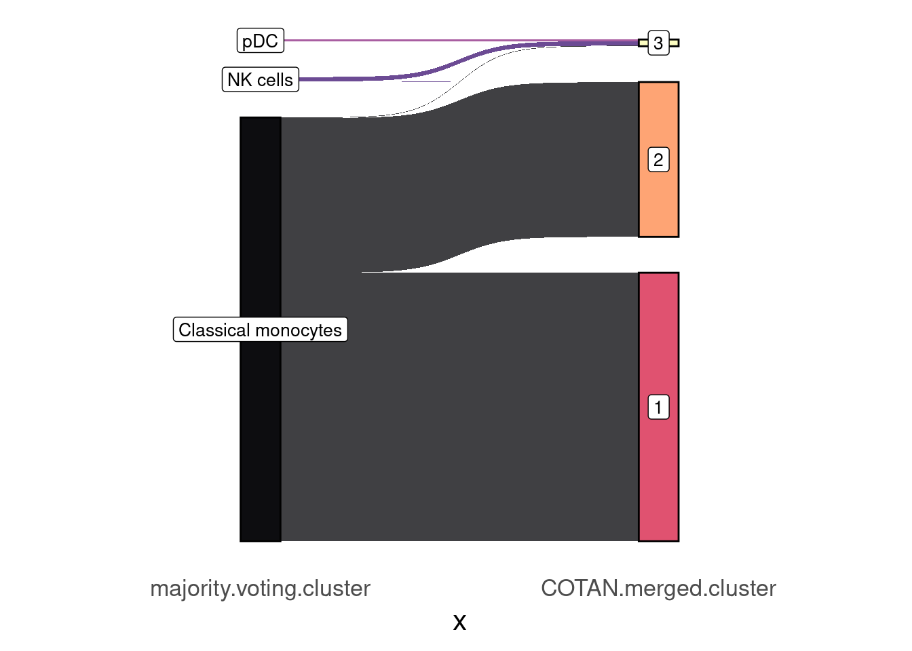

#library(SingleCellExperiment)
#library(DuoClustering2018)
#library(tidyr)
library(rlang)
library(ggplot2)
library(ggsankey) # remotes::install_github("davidsjoberg/ggsankey")
library(tibble)
library(zeallot)
library(assertthat)
library(COTAN)
#devtools::load_all("~/dev/COTAN/COTAN/")
options(parallelly.fork.enable = TRUE)
outDir <- "Results/Clusterization/"
setLoggingLevel(2)
setLoggingFile(file.path(outDir, "CD14_Monocytes_ClusterizationsComparisons.log"))CD14+ clusterizations comparisons with CellTypist
cd14Obj <- readRDS(file = file.path("Data/CD14Cleaned/", "CD14_Monocytes.cotan.RDS"))
sampleCondition <- getMetadataElement(cd14Obj, datasetTags()[["cond"]])
sampleCondition[1] "CD14_Monocytes"getClusterizations(cd14Obj)[1] "split" "merge" "majority-voting"metaC <- getMetadataCells(cd14Obj)splitClusters <- getClusters(cd14Obj, "split")
mergedClusters <- getClusters(cd14Obj, "merge")labelsDF <- read.csv(file.path("Data/CD14Cleaned/", "CD14Cleaned_Immune_All_Low_predicted_labels.csv"), header = TRUE)
labelsDF <- column_to_rownames(labelsDF, var = "X")
rownames(labelsDF) <- gsub("[.]", "-", rownames(labelsDF))
cells_to_keep <- rownames(labelsDF)[rownames(labelsDF) %in% getCells(cd14Obj)]
assert_that(identical(cells_to_keep, getCells(cd14Obj)))
majorityVotingClusters <- labelsDF[cells_to_keep, "majority_voting"]
names(majorityVotingClusters) <- cells_to_keep
majorityVotingCoexDF <- DEAOnClusters(cd14Obj,clName ="majority-voting",clusters = majorityVotingClusters)
cd14Obj <- addClusterization(cd14Obj, clName = "majority-voting",
clusters = majorityVotingClusters,
coexDF = majorityVotingCoexDF)Save the COTAN object
saveRDS(cd14Obj, file = file.path(outDir, paste0(sampleCondition, ".cotan.RDS")))nlevels(splitClusters)
head(sort(table(splitClusters), decreasing = TRUE), 10L)
nlevels(mergedClusters)
head(sort(table(mergedClusters), decreasing = TRUE), 10L)
nlevels(majorityVotingClusters)
head(sort(table(majorityVotingClusters), decreasing = TRUE), 10L)splitClustersDF <- as.data.frame(splitClusters)
splitClustersDF[["cell"]] <- rownames(splitClustersDF)
colnames(splitClustersDF)[[1]] <- "COTAN.split.cluster"
splitClustersDF <- splitClustersDF[order(splitClustersDF[["COTAN.split.cluster"]]), ]
mergedClustersDF <- as.data.frame(mergedClusters)
mergedClustersDF[["cell"]] <- rownames(mergedClustersDF)
colnames(mergedClustersDF)[[1]] <- "COTAN.merged.cluster"
mergedClustersDF <- mergedClustersDF[order(mergedClustersDF[["COTAN.merged.cluster"]]), ]
majorityVotingClustersDF <- as.data.frame(majorityVotingClusters)
majorityVotingClustersDF[["cell"]] <- rownames(majorityVotingClustersDF)
colnames(majorityVotingClustersDF)[[1]] <- "majority.voting.cluster"
majorityVotingClustersDF <- majorityVotingClustersDF[order(majorityVotingClustersDF[["majority.voting.cluster"]]), ]mjvt_split.table <- merge.data.frame(x = majorityVotingClustersDF, y = splitClustersDF,
by = "cell", all.x = TRUE, all.y = TRUE)
table(mjvt_split.table[,c(2L, 3L)]) COTAN.split.cluster
majority.voting.cluster 1 2 3 4 5
Classical monocytes 877 3 637 837 48
NK cells 1 25 0 0 0
pDC 0 10 0 0 0mjvt_split.table2 <- mjvt_split.table %>% make_long(majority.voting.cluster, COTAN.split.cluster)
ggplot(mjvt_split.table2,
aes(x = x,
next_x = next_x,
node = node,
next_node = next_node,
fill = factor(node),
label = node)) +
geom_sankey(flow.alpha = 0.75, node.color = 1) +
geom_sankey_label(size = 3.5, color = 1, fill = "white") +
scale_fill_viridis_d(option = "A", alpha = 0.95) +
theme_sankey(base_size = 16) +
theme(legend.position = "none")
mjvt_merged.table <- merge.data.frame(x = majorityVotingClustersDF, y = mergedClustersDF,
by = "cell", all.x = TRUE, all.y = TRUE)
table(mjvt_merged.table[,c(2L, 3L)]) COTAN.merged.cluster
majority.voting.cluster 1 2 3
Classical monocytes 1522 877 3
NK cells 0 1 25
pDC 0 0 10mjvt_merged.table2 <- mjvt_merged.table %>% make_long(majority.voting.cluster, COTAN.merged.cluster)
ggplot(mjvt_merged.table2,
aes(x = x,
next_x = next_x,
node = node,
next_node = next_node,
fill = factor(node),
label = node)) +
geom_sankey(flow.alpha = 0.75, node.color = 1) +
geom_sankey_label(size = 3.5, color = 1, fill = "white") +
scale_fill_viridis_d(option = "A", alpha = 0.95) +
theme_sankey(base_size = 16) +
theme(legend.position = "none")
markersCD14 <- findClustersMarkers(cd14Obj,n = 100,clName = "merge",method = "BH")
write.csv(markersCD14,file = "Data/CD14Cleaned/ClusterMarkerGenes.csv")
head(markersCD14) CL Gene Score adjPVal DEA IsMarker logFoldCh
1 1 HLA-DQA1 -0.3398915 2.603676e-59 -0.15274999 0 -0.5470222
2 1 HLA-DQA2 -0.2899185 7.002901e-43 -0.12223685 0 -0.4804835
3 1 HLA-DPA1 -0.2808830 2.589504e-40 -0.13090249 0 -0.4370669
4 1 HLA-DRA -0.2499997 1.042557e-31 -0.10296185 0 -0.3654458
5 1 HLA-DPB1 -0.2225778 5.652934e-25 -0.09887797 0 -0.3375752
6 1 YBX1 -0.2095002 5.042102e-22 -0.08080263 0 -0.3784618
The cells in cluster 1 seem to be classical CD14 monocytes since they express CD14 while depleted in MHC class II proteins complex which is enriched in cell cluster 2 that seems intermediate monocytes.
Cluster 3 does not seem to be a monocyte cluster. Using enrichr website it is enriched in Plasmacytoid Dendritic cell marker genes.
sessionInfo()R version 4.3.2 (2023-10-31)
Platform: x86_64-pc-linux-gnu (64-bit)
Running under: Ubuntu 20.04.6 LTS
Matrix products: default
BLAS: /usr/lib/x86_64-linux-gnu/openblas-pthread/libblas.so.3
LAPACK: /usr/lib/x86_64-linux-gnu/openblas-pthread/liblapack.so.3; LAPACK version 3.9.0
locale:
[1] LC_CTYPE=C.UTF-8 LC_NUMERIC=C LC_TIME=C.UTF-8
[4] LC_COLLATE=C.UTF-8 LC_MONETARY=C.UTF-8 LC_MESSAGES=C.UTF-8
[7] LC_PAPER=C.UTF-8 LC_NAME=C LC_ADDRESS=C
[10] LC_TELEPHONE=C LC_MEASUREMENT=C.UTF-8 LC_IDENTIFICATION=C
time zone: Europe/Rome
tzcode source: system (glibc)
attached base packages:
[1] stats graphics grDevices utils datasets methods base
other attached packages:
[1] COTAN_2.5.0 assertthat_0.2.1 zeallot_0.1.0 tibble_3.2.1
[5] ggsankey_0.0.99999 ggplot2_3.5.0 rlang_1.1.1
loaded via a namespace (and not attached):
[1] RColorBrewer_1.1-3 rstudioapi_0.15.0
[3] jsonlite_1.8.7 shape_1.4.6
[5] umap_0.2.10.0 magrittr_2.0.3
[7] spatstat.utils_3.0-3 farver_2.1.1
[9] rmarkdown_2.24 GlobalOptions_0.1.2
[11] vctrs_0.6.3 ROCR_1.0-11
[13] spatstat.explore_3.2-1 DelayedMatrixStats_1.22.5
[15] askpass_1.2.0 htmltools_0.5.8
[17] S4Arrays_1.2.0 sctransform_0.4.1
[19] parallelly_1.37.1 KernSmooth_2.23-22
[21] htmlwidgets_1.6.2 ica_1.0-3
[23] plyr_1.8.8 plotly_4.10.2
[25] zoo_1.8-12 igraph_2.0.3
[27] mime_0.12 lifecycle_1.0.3
[29] iterators_1.0.14 pkgconfig_2.0.3
[31] rsvd_1.0.5 Matrix_1.6-3
[33] R6_2.5.1 fastmap_1.1.1
[35] MatrixGenerics_1.12.3 fitdistrplus_1.1-11
[37] future_1.33.0 shiny_1.8.0
[39] clue_0.3-64 digest_0.6.33
[41] colorspace_2.1-0 patchwork_1.2.0
[43] S4Vectors_0.38.1 tensor_1.5
[45] Seurat_5.0.0 dqrng_0.3.0
[47] RSpectra_0.16-1 irlba_2.3.5.1
[49] beachmat_2.16.0 labeling_0.4.2
[51] PCAtools_2.14.0 progressr_0.14.0
[53] RcppZiggurat_0.1.6 spatstat.sparse_3.0-2
[55] fansi_1.0.4 polyclip_1.10-4
[57] httr_1.4.6 abind_1.4-5
[59] compiler_4.3.2 withr_3.0.0
[61] doParallel_1.0.17 BiocParallel_1.34.2
[63] viridis_0.6.4 fastDummies_1.7.3
[65] dendextend_1.17.1 MASS_7.3-60
[67] openssl_2.1.0 DelayedArray_0.26.7
[69] rjson_0.2.21 tools_4.3.2
[71] lmtest_0.9-40 httpuv_1.6.11
[73] future.apply_1.11.0 goftest_1.2-3
[75] glue_1.7.0 nlme_3.1-163
[77] promises_1.2.0.1 grid_4.3.2
[79] Rtsne_0.17 cluster_2.1.6
[81] reshape2_1.4.4 generics_0.1.3
[83] spatstat.data_3.0-1 gtable_0.3.3
[85] tidyr_1.3.0 data.table_1.15.0
[87] BiocSingular_1.16.0 ScaledMatrix_1.8.1
[89] sp_2.1-1 utf8_1.2.3
[91] spatstat.geom_3.2-4 BiocGenerics_0.46.0
[93] RcppAnnoy_0.0.21 ggrepel_0.9.5
[95] RANN_2.6.1 foreach_1.5.2
[97] pillar_1.9.0 stringr_1.5.0
[99] spam_2.10-0 RcppHNSW_0.6.0
[101] later_1.3.1 circlize_0.4.15
[103] splines_4.3.2 dplyr_1.1.2
[105] lattice_0.22-5 deldir_2.0-2
[107] survival_3.5-8 tidyselect_1.2.0
[109] ComplexHeatmap_2.16.0 miniUI_0.1.1.1
[111] pbapply_1.7-2 knitr_1.43
[113] gridExtra_2.3 IRanges_2.34.1
[115] scattermore_1.2 stats4_4.3.2
[117] xfun_0.39 matrixStats_1.2.0
[119] stringi_1.8.1 lazyeval_0.2.2
[121] yaml_2.3.7 evaluate_0.21
[123] codetools_0.2-19 cli_3.6.1
[125] uwot_0.1.16 RcppParallel_5.1.7
[127] xtable_1.8-4 reticulate_1.36.1
[129] munsell_0.5.0 Rcpp_1.0.11
[131] spatstat.random_3.2-1 globals_0.16.2
[133] png_0.1-8 parallel_4.3.2
[135] Rfast_2.1.0 ellipsis_0.3.2
[137] dotCall64_1.1-0 parallelDist_0.2.6
[139] sparseMatrixStats_1.12.2 listenv_0.9.0
[141] ggthemes_5.1.0 viridisLite_0.4.2
[143] scales_1.3.0 ggridges_0.5.4
[145] purrr_1.0.1 SeuratObject_5.0.0
[147] leiden_0.4.3 crayon_1.5.2
[149] GetoptLong_1.0.5 cowplot_1.1.1